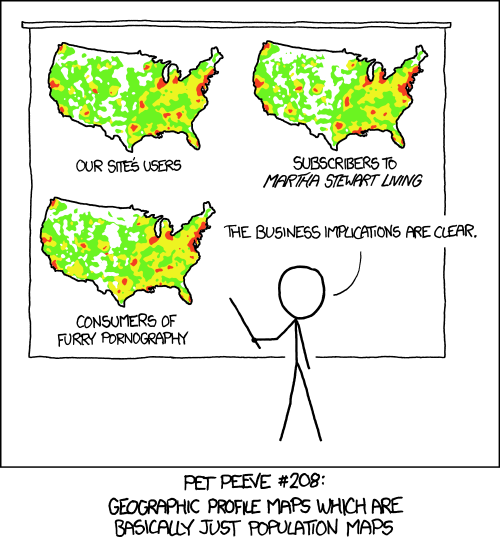

helmet_icon <- makeIcon(
iconUrl = "http://www.clker.com/cliparts/l/R/b/J/X/D/astronaut-helmet-md.png",
iconWidth = 15,
iconHeight = 15
)
leaflet() %>%
addTiles() %>%
addMarkers(lng = jitter(space$Longitude,
factor = 2),
lat = jitter(space$Latitude,
factor = 2),
icon = helmet_icon,
popup = paste(space$Name, "<br>",
"Birth Place: ", space$`Birth Place`),
label = paste(space$Name)
)Creating Maps with the leaflet Package
Creating Maps
Maps are fantastic and complicated all at the same time! Maps are some of the richest visualizations around because they come with data built into them. That is, on top of whatever data you’re going to plot you are also probably going to view terrain, roads, state/country borders, city names or a host of other information that come with our geography.
This implicit richness only adds to challenge of creating a good map. Observe the following recent tweet for a silly example of how maps can be…difficult.
There is no shortage of map data visualizations on the web, but all too often this is what we end up with:

🎥 Required Video: Introductory Series to leaflet in R (6 Videos)
Caution
Be sure to watch all 6 videos in this series.
Check-in:
leaflet
1. Is running just the leaflet() function enough to produce a map?
- Yes
- No
2. To plot data points on a leaflet map, we should probably use which function?
addTiles()addMarkers()addProviderTiles()addPolygons()
More on the leaflet package
The leaflet package is actually extremely rich and can basically enable (interactive) map visualizations as complex as you can imagine. Take some time to peruse the site for the leaflet R package:
https://rstudio.github.io/leaflet/
Check-in:
leaflet
3. What do the names of your plotted data columns have to be?
x;yleafletx; `leafletylat/latitude;lon/longitude- Anything as long as you tell the
addMarkers()function correctly
4. If you were to think of latitude and longitude as coordinates in the cartesian coordinate system, then…
- latitude is on the horizontal axis and longitude is on the vertical
- latitude is on the vertical axis and longitude is on the horizontal
Practice With Leaflet
Check-in:
leaflet
The above map plots data on NASA astronauts!
5. The graphic for each marker is a little astronaut helmet. How cute! This image was used via…
- a URL pointing to it on the web.
- a downloaded image file.
6. The popup argument specifies what you see when you ______, while the label argument specifies what you see when you ______.
- hover; click
- zoom-in; zoom-out
- click; hover
- squint your eyes; look normally
Extra Resources
- Greg Sward has a pretty good series of videos on leaflet in R - the entire series is longer than we can fit as required viewing, but they are great tutorials!
- Abhinav Agrawal also has a good beginner series
- Don’t forget about the Data-to-Viz Website